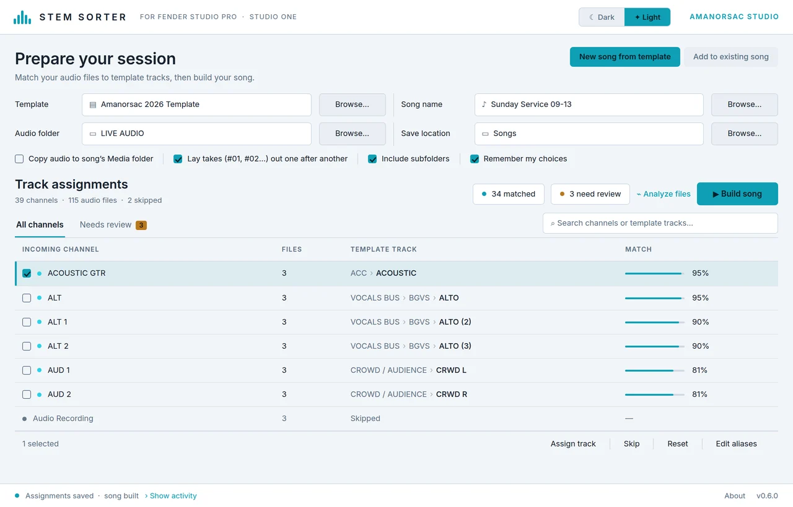
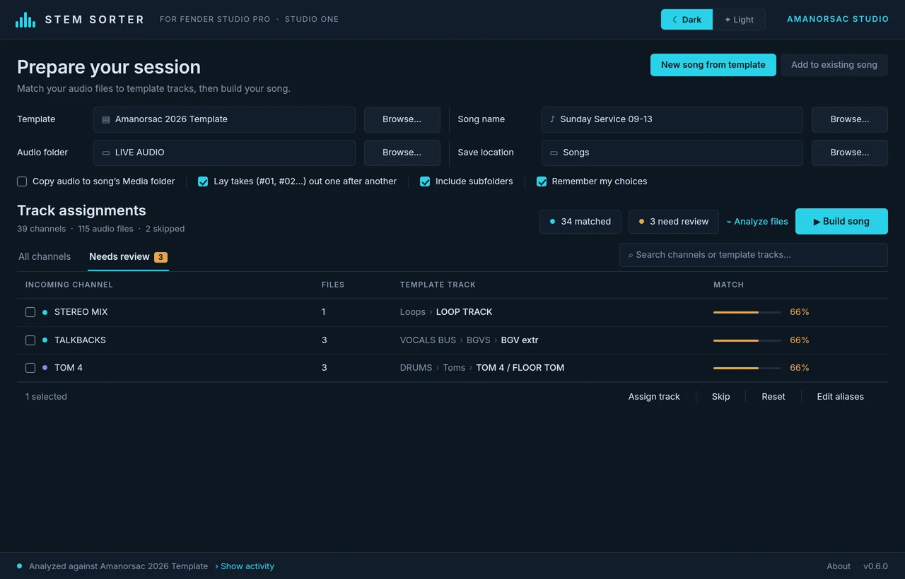
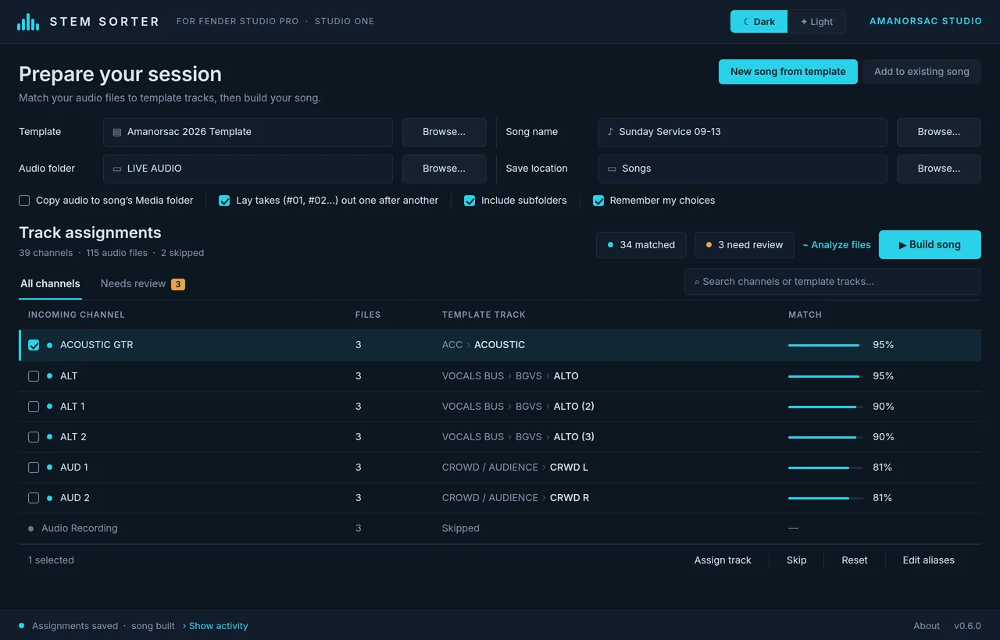
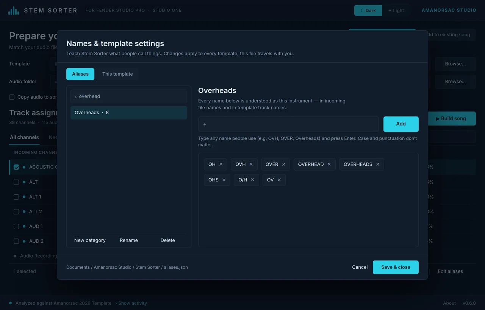
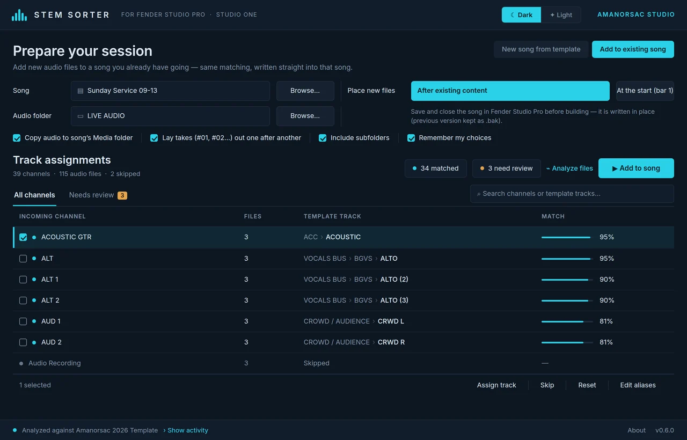
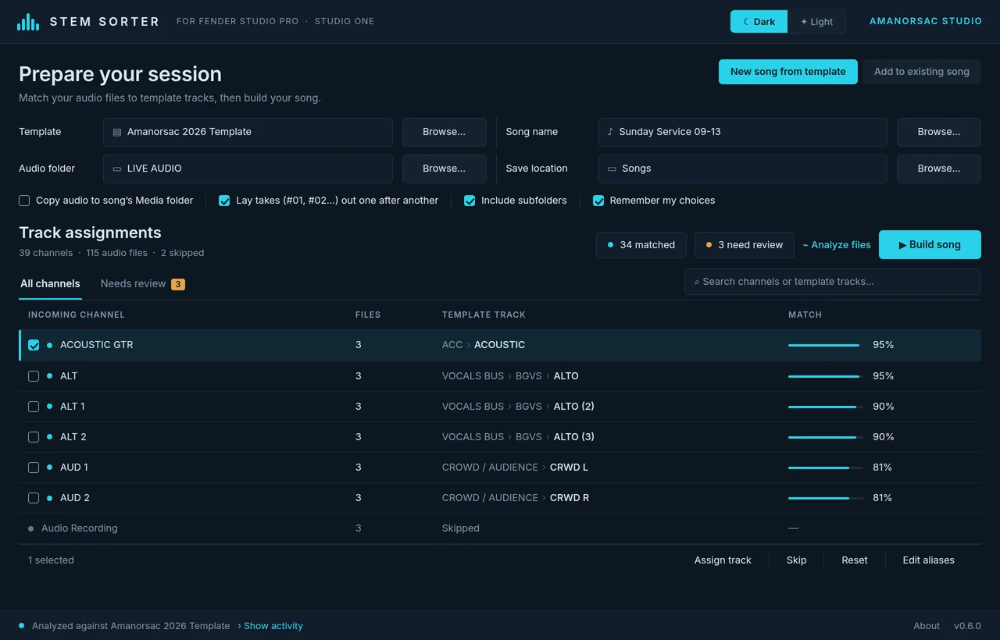

Stem Sorter reads the names of incoming audio files, works out what each one is, and places every clip on the right track of your Fender Studio Pro or Studio One template. Kicks on the kick track, overheads on the overheads, tenor 2 on tenor 2. Inserts, sends and buses untouched.
Mac & Windows · made for Studio One and Fender Studio Pro · one key covers two computers · installs through Amanorsac Hub

Forty files land in a folder: KICK #03.aif, OVH L #03.aif, TNR 2 #03.aif, SNARE DWN #03.aif. You open your template, drag them in one by one, rename, move, route, and twenty minutes later you can finally press play. Multiply that by every Sunday, every client, every rehearsal capture.
Names
OH, OVH, Overheads and Over L are all overheads. LV, Lead Vox, WL and Song 1 are all your lead vocal. TNR 2 is the second tenor mic. Stem Sorter ships knowing hundreds of these, and you can teach it yours in seconds.
Template
Point it at your .songtemplate. It reads every track, every folder, every colour, and matches each incoming channel to the right one — side-aware for L and R, number-aware for SOP, SOP 2, SOP 3. Every match carries a confidence bar, so you see at a glance what deserves a look.

Build
Press Build and you get a new .song with every clip already sitting on its track and takes laid out in order, ready to open. Because it only adds clips and never rebuilds the mixer, your inserts, sends, buses, colours and folders come through exactly as you saved them.

Review
A live table of every channel: which track it is going to, how sure the tool is, and why. Filter to Needs review, search by channel or track, fix anything with one click. Every assignment you confirm is remembered per template, so the next capture from the same rig lands in one press.

Mid-project
New files arrived halfway through? Switch to Add to existing song, pick the .song, and Stem Sorter places the new material after what is already there, copies the audio into that song's Media folder, and keeps the previous version beside it as a backup.

Live captures arrive as #01, #02, #03 per channel. Stem Sorter lays each take out after the longest file of the previous one, so every channel stays in sync across the whole service.
An in-app editor lists every instrument category with the names people use for it. Type OVHS, press Enter, done. Share the file with a colleague and Stem Sorter understands their world too.
Two themes, switched live and remembered. Track colours from your template carry into the app, so a channel you recognise by colour looks the same here.
Clips are written in the song's own format and everything else is copied through byte for byte. That is why the songs it builds open cleanly, and why it works across Fender Studio Pro and Studio One 6, 7, 8 and the releases after them.
Whichever your room is lit for. The theme switches live and is remembered next time — and the track colours from your template carry into both.

Or an existing song you have already started.
Wherever the audio landed. Subfolders included.
One row per channel, every take grouped under it.
Fix anything with a double-click.
Open the song in Fender Studio Pro. Press play.
Fender Studio Pro and Studio One. Tuned for version 8; works with songs and templates from 6, 7 and newer.
WAV, AIFF and FLAC. Mono or stereo, any sample rate — the song resamples as it always does.
Windows 10 and 11, 64-bit. macOS 11 Big Sur and later, Apple silicon and Intel.
Under 40 MB installed. No runtime to install, and nothing about your session leaves your computer.
Stem Sorter never creates tracks and never touches your mixer — which is exactly why the songs it builds open cleanly. So give it room:
SPARE 1–SPARE 4 under BGVs, a couple under Keys, one or two under Drums and Loops, routed and coloured the way you would want a surprise channel to arrive. It recognises SPARE, EXTRA, FREE, OPEN and TBD and uses them when a channel has nowhere else to go.OH L, SNARE BOTTOM, TNR 2, CRWD R.SOP, SOP 2, SOP 3.$19
One license key covers the studio machine and the laptop that goes out to the room. A year of updates is included, and the version you have keeps working after that.
Documents / Amanorsac Studio / Stem Sorter. The alias dictionary and every template's learned assignments are plain files you can back up or share.From people who use it
Be the first to leave one.
It goes up once I've actually read it — usually within a day or two.
Twenty minutes of dragging, or one press of Build. Made for Studio One and Fender Studio Pro, on Mac and Windows, one key for two computers.
Studio One and Fender Studio Pro are trademarks of their owners · Stem Sorter is not affiliated with them